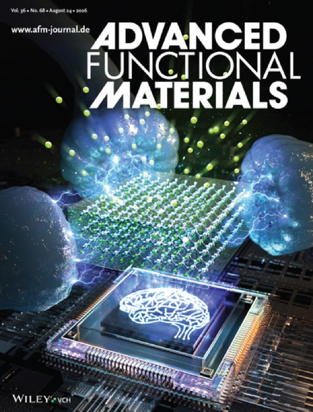
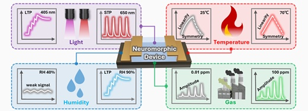
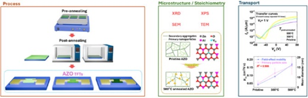

2026
[59] Performance Enhancement of Tin Chloride‐Incorporated Ferroelectric Polymer‐Based Artificial Synapse for Hardware Neural Networks, Advanced Functional Materials, 8월 (2026)
Jaeyun Kim, Hyunkyu Lee, Yeonho Choi, Won Young Jang, Hyungmin Kim, Krishna Moorthy Ponnusamy, Hongseung Lee, Jaewook Yoo, Ji Ye Lee, S. Chandramohan, Seongin Hong, Hagyoul Bae, Hyeonsik Jang, Sang Yeol Lee, Keun Heo

[58] From Environmental Noise to Computational Degrees of Freedom: Adaptive Neuromorphic Devices, ACS Applied Electronic Materials, 7월 (2026)
Youngmin Han, Geon Park, MiRiNae Lee, Seongin Hong*, Kyunghee Choi*, Hocheon Yoo*

[57] Correlation among Process, Microstructure/Stoichiometry, and Transport in Spin-Coated Al-Doped ZnO Thin-Film Transistors Subjected to Annealing-Induced Electrical Performance Enhancement, ACS Applied Electronic Materials, 4월 (2026)
Namgyu Lee†, Jaewon Lee†, Hyungu Kim†, Wonki Lee, Jun Yeon Hwang, Pavan Pujar, Sangmoon Yoon*, Seongin Hong*
